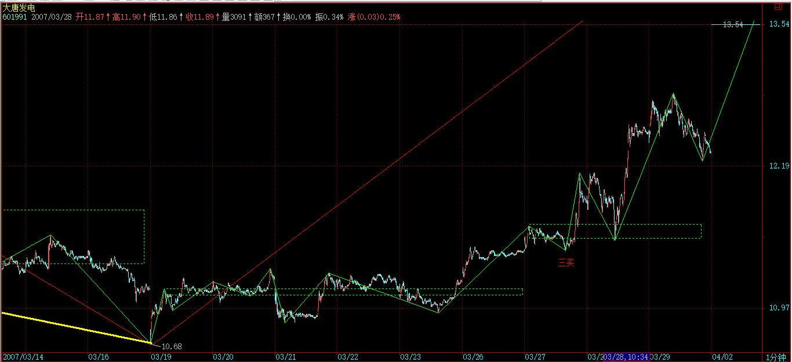

(2007-03-30 15:17:22)
市场的节奏，只有一个：买点买、卖点卖。【韶山映山红】买点买、卖点卖。】
这么简单的问题，但从来能遵守的人，能有几个？
是什么阻止你倾听市场的节奏？是你的贪婪与恐惧。买点，总在下跌中形成，但恐惧阻止了你；卖点，总在上涨中，但贪婪阻止了你。【韶山映山红】缠论在本质上属于逆势操作，所以违背人性。】
一个被贪婪与恐惧所支配的人，在市场中唯一的命运就是：死！
市场中，买点上的股票就是好股票，卖点上的股票就是坏股票，除此之外的好坏分类，都是瞎掰。
你的命运，只能自己去把握，没有任何人是值得信任的，甚至包括本ID。唯一值得信任的就是，就是市场的声音、市场的节奏，这需要你用心去倾听，用一颗战胜了贪婪与恐惧的心去倾听。【韶山映山红】机械操作法可以在一定程度上减少贪婪与恐惧的影响。】
市场的声音，永远是当下的，任何人，无论前面有多少辉煌，在当下的市场中，什么都不是，只要有一刻被贪婪与恐惧阻隔了对市场的倾听，那么，这人，就走入鬼门关。除非，此人能猛醒，否则，等待的只有：死亡。【韶山映山红】所以缠师也一样的要盯盘。】
记住，1万亿与1万，变成0的速度是一样的，前者甚至可以更快。【韶山映山红】机动性差一些，所以可能更快。】
买点买，买点只在下跌中，没有任何股票值得追涨，如果你追涨被套，那是活该；卖点卖，没有任何股票值得杀跌，如果你希望瘦身，那就习惯砍仓杀跌吧。
即使你搞不懂什么是买点卖点，但有一点是必须懂的，就是不能追涨杀跌。就算是第三类买卖点，也是分别在回调与反弹中形成的，哪里需要追涨杀跌？
买卖点是有级别的，大级别能量没耗尽时，一个小级别的买卖点引发大级别走势的延续，那是最正常不过的。【韶山映山红】这段话描述的是什么样的场景？有一个大级别的Ａ走势，发生了一个转折走势Ｂ，但是Ａ走势的能量并没有耗尽，所以在Ｂ走势的一个小级别的买卖点，就引发了Ｂ走势的转折走势Ｃ，这个Ｃ走势是大级别Ａ走势的延续，也就是说，Ｂ走势发生了小转大，原因是Ａ走势的能量没有耗尽。】
【韶山映山红】走势是能量的运动。能量耗尽，才会有走势的结束。而走势类型的结束，不等于走势的结束。背驰是走势类型结束的判断，是力度判断，不是走势结束的判断，不是能量判断。那么，能量判断是什么？★可以做个专题，以后研究。】
但如果一个小级别的买卖点和大级别的走势方向相反，而该大级别走势没有任何衰竭，这时候参与小级别买卖点，就意味着要冒着大级别走势延续的风险，这是典型的刀口舔血。
市场中不需要频繁买卖，战胜市场，需要的是准确率，而不是买卖频率，只有券商与税务部门才喜欢买卖高频率。
市场不是赌场，市场的操作是可以精心安排的。
当你买入时，你必须问自己，这是买点吗？这是什么级别的什么买点？大级别的走势如何？当下各级别的中枢分布如何？大盘的走势如何？该股所在板块如何？【韶山映山红】１，买卖点判断与分析。①是否买点，②什么级别，③什么买点。 ２，多级别联立。①大级别走势分析，②各级别中枢分析，③支撑与压力分析，盈亏比判断。 ３，市场基本面与市场环境背景分析。 ４，比价系统分析。①板块基本面，②板块与个股的比价系统分析。】
而卖点的情况类似。
你对这股票的情况分析得越清楚，操作才能更得心应手。
至于买卖点的判断，如何提高其精确度，那是一个理论学习与不断实践的问题，但这一套程序与节奏，是不会改变的。
精度可以提高，但节奏不可能乱，节奏比精度更重要。无论你对买卖点判断的水平如何，即使是初学者，也必须以此节奏来要求自己。
如果你还没有市场的直觉，那么就强迫自己去执行，否则，就离开。
对于初学者，一定不能采取小级别的操作，你对买卖点的判断精确度不高，如果还用小级别操作，不出现失误就真是怪事了。
对于初学者，按照30分钟来进出，是比较好的，怎么也不能小于5分钟，5分钟都没有进入背驰段，就不能操作。【韶山映山红】这里说的不是买卖点的级别，而是背驰段的级别。】
级别越小，对判断的精确要求越高，而频繁交易而导致的频繁失误只会使心态变坏，技术也永远学不会。先学会站稳，才考虑行走，否则一开始就要跑，可能吗？
节奏，永远地，只有市场当下的节奏，谁，只要与此节奏对抗，只有痛苦与折磨在等待。
注意，一定要注意，所谓的心态好不是如被虐狂般忍受市场节奏错误后的折磨，这一定要注意。很多人，错了，就百忍成钢，在市场中是完全错误的。【韶山映山红】苦难，一文不值。】
市场中，永远有翻身的机会，那前提是，你还有战斗的能力。
一旦发现节奏错误，唯一正确的就是跟上节奏，例如，错过第一买卖点，还有第二买卖点，如果你连第三买卖点都错过，连错三次，死了也活该。【韶山映山红】这一次死了，就休息。等下一次再来。】
为什么有三类买卖点？市场太仁慈了，给你三次改错的机会，你如果连这都不能改正，那就休息去，喝茶去，三次都不能改错，还犯同样的错误，不休息、不喝茶，还能干什么？
那些一个股票上涨N倍后还问能不能买，甚至还追高买，这种人，还能说什么？难道上涨N倍还看不到买点吗？
看着很多散户，在连续拉升后还赌后面的所谓涨停，只能好不客气地说：死了活该。
市场是残酷的，对于企图违反市场节奏的人来说，市场就是他们的死地；市场是美好的，市场就是巴赫的赋格曲，那里有生命的节奏。【韶山映山红】百度百科：赋格曲是复调乐曲的一种形式。“赋格”为拉丁文“fuga”的译音，原词为“遁走”之意，赋格曲建立在模仿的对位基础上，从16～17世纪的经文歌和器乐里切尔卡中演变而成，赋格曲作为一种独立的曲式，直到18世纪在J.S.巴赫的音乐创作中才得到了充分的发展。巴赫丰富了赋格曲的内容，力求加强主题的个性，扩大了和声手法的应用，并创造了展开部与再现部的调性布局，使赋格曲达到相当完美的境地。酷我音乐 赋格曲 试听：http://bd.kuwo.cn/yinyue/4280029?from=baidu 】
节奏，永远是市场的节奏，一个没有节奏感的市场参与者，等待他的永远都是折磨，抛开你的贪婪、恐惧，去倾听市场的节奏。
周末了，放下一切，却倾听大自然的节奏，生命的节奏，音乐的节奏，然后再回来倾听，这市场的节奏。
与市场共舞，你的贪婪与恐惧一一剥落，你会变得光明无比。【韶山映山红】我心光明，夫复何求？】
附录
【韶山映山红】附录时间2007-3-30 15:25。】
今天大盘对市场双方都可接受，汉奸无法如愿拉长阴，而月、季略带上影，也是本ID可接受的。后面震荡依然，毕竟，汉奸还是有实力去制造下一月、季的下影。
对于本ID来说，在3000点上再玩一次3000点下的震荡盘整，是最有利的。玩震荡，汉奸没什么水平，而现在管理层、散户都有恐高，需要时间治疗。
个股方面，三线已经被管理层监管警告，一线大盘打架不可能被散户接受，这两天就是例子，因此，二线是最好的平衡，谁都能接受，一些有中线潜力的二线已创新高，这就是点火，能否燎原，那是另外的问题。
今天4点有会，必须走，先下，再见。
今天大盘对市场双方都可接受，汉奸无法如愿拉长阴，而月、季略带上影，也是本ID可接受的。后面震荡依然，毕竟，汉奸还是有实力去制造下一月、季的下影。
对于本ID来说，在3000点上再玩一次3000点下的震荡盘整，是最有利的。玩震荡，汉奸没什么水平，而现在管理层、散户都有恐高，需要时间治疗。
个股方面，三线已经被管理层监管警告，一线大盘打架不可能被散户接受，这两天就是例子，因此，二线是最好的平衡，谁都能接受，一些有中线潜力的二线已创新高，这就是点火，能否燎原，那是另外的问题。
今天4点有会，必须走，先下，再见。
2007-3-30 15:25
(2007-04-01 10:55:14)
生命独白
比大海还宽广的
小溪
近代西方音乐，一个永不枯竭的源头，来自一条小溪，那比大海还宽广的小溪。今天，播放的这套6首《无伴奏大提琴组曲》，只是这小溪之一瓢，但足以让所有大提琴家倾其一生去演绎。这是大提琴的圣经，就如同他的《平均律》是钢琴的圣经一样。
生命独白，没有任何伴奏，只有大提琴的孤独，如同生命在茫茫宇宙间的行走。一切绚烂归于平静，这里只有生命最透亮的直面。剥离了一切表象，却映照出整个世界。说实在，这里的音乐，比《二泉映月》还要更生命，更世界，一切哀愁、快乐都在音乐中升华，但却依然世界，与所谓的天国无关。
在真正的音乐面前，语言永远苍白，还是去倾听吧。
各位早上好
这版本来自卡萨尔斯，最权威的版本
昨天北京天气不好，今天还行，要出去走走。
先下，再见。
2007-4-1 11:02
(2007-04-02 15:12:44)
无论对于媒体还是专家，流动性过剩的流动性，业已过剩。
一切经济现象，只要被贴上流动性过剩标签，就被描画成洪水猛兽。然而，竟无人追问，这棒杀一切的流动性过剩，真是矛盾之根本吗？
以水为喻，河伯之水注于小泽，流动性过剩泛滥而洪水滔天，若注于大海，又何来流动性过剩？问题的关键不是洪水如何凶猛，而是注之小泽还是大海。
流动性过剩，只具有相对性，没有绝对性，与相应的经济、金融等结构所构筑的当下资金吞吐能力相关。洪水，只能疏导而不能截堵，任何用各种行政、金融手段来截堵流动性过剩的，鲧就是其命运。而只有将水道疏导而使之归于大海，才能彻底对治流动性过剩。
资金如水，有着各种存在形态。地球水循环之所以能稳定维持，就在于各种形态之间能顺畅转换，而金融结构对经济的存在，与之类似。储蓄、债券等如同大海，股票、期货等如同冰川，生产、消费等如同江河云雾。各种资金形态能否顺畅转换，其前提在于是否有对海量资金能进行长期有效吸纳的资本市场。一个强大的、多层次的资本市场非但不是流通性过剩的罪恢祸首，而且只有超常规大力发展资本市场，才是解决相对流通性过剩的正途。
目前，中国正面临社会、经济发展方式的深刻转型，需要对大量的经济、社会资源进行有效配置，这一切同样迫切要求一个强大的、多层次资本市场的建立。而相对中国当下金融结构而存在的流通性过剩，为此提供了最基本的前提。那些把流通性过剩归罪于资本市场的人，不仅倒因为果，而且本末倒置。
目前的流通性过剩非但不是一个具有高度危害性的经济现象，而且还是中国完成社会、经济发展方式深刻转型的必要前提。没有完善的金融结构、强大的资本市场，为社会、经济发展方式转型进行强大、有效的资源配置，只能是一句空话。
在可见的未来，特别在人民币币值依然有着广阔上升空间而中国贸易顺差的趋势依然不断扩大的背景下，相对流动性过剩必将是中国经济的常态，从而为中国资本结构、融资结构、财富结构等升级换代提供契机与动力。
在不可逆转的资本全球化历史潮流中，中国必然崛起的标志不是成为一个制造大国，而是要成为资本大国，只有成为资本大国，才有真正的经济大国可言。
资本大国的首要前提，就是要有一个能容纳海量资金以及充分流动性的金融市场。而一个超常规发展的资本市场，是其中最重要的方面。
目前出现的相对流动性过剩，归根结底是因为前期经济转型及金融重构的步子迈得太小，资本市场的扩张速度太慢，对中国成为资本大国的速度估计太低所致。
在2002-2006年中国的外汇储备从2864亿美元快速增长到10663亿美元时，金融市场的建设步伐却严重滞后。到如今，国债、债券等基础性市场的规模依然严重偏小，而创业板继续在无休止的创业设计中，多层次资本市场的建立一如既往地只闻其声，金融衍生品市场带来的更是一次次关于风险的口水战。
而同时，那些号称国外资金流入制造流动性过剩的言论却甚嚣尘上，但却忽视了一个最基本的前提，在中国必将成为世界最大资本大国的历史进程中，中国的金融市场必将超大规模地吸纳全世界的资金，现在这些流入的资金与之相比，只不过是沧海一瓢。
中国经济最大的风险不是流动性过剩、不是通货膨胀、不是其他任何可能的经济现象，而是在资本全球化这当下最大的历史潮流中错失发展的机遇，使得中国的资本大国之梦永远是梦。任何经济现象，都有相应的破解方式，但历史性的机遇是可遇不可求的，错失就是永远的错失，这才是面对当下一切经济现象时必须保持的一个最基本视角。
站在中国成为世界最大资本大国的历史进程中，按照相应规模与标准重构金融市场，超常规地发展多层次的资本市场，从而驾御流动性过剩，使之万流归海，为经济发展方式的彻底转型提供强劲而又可控的动力输出，这才是解决当下问题的根本之道。
前面已经说过，如果看不明白上海指数，就看深圳的。
深圳今天的走势只表明一点，优质二线股还是得到更多人的认同。深圳成分股里，基本都是优质二线股。

其实，今天最终能收成这样，也是经过刀光血影的。早上汉奸曾又使出拉金融股的一招，结果被破坏，没什么效果，才有后面二线股的整体走强。
个股方面，看看上海、深圳今天涨停的，基本都是二线股与有真正题材的三线股，特别是上海，很多都是10元上下的，就知道后面真正可以产生利润的股票还是本ID前段时间已经明确指出的那些。具体就不说了，现在监管风暴下，少说点不会错。
如果不会挑的，就去看300或深圳成分股，就那些股票，当然，金融股、特大盘股也会有表现的，但这类股票还是以打仗为主，如果资金量比较大的，组合部分也是可以的。
现在的走势肯定是进二退一甚至是进三退二，快速拉升只可能对汉奸有利，把握节奏就很重要了。真看不明白的，就看5日线，你看这段时间这么折腾，其实都没破过5日线，看着不用闹心。
2007-4-2 15:14
4点有一个会议，必须先走，晚上9点再来。
再见。
2007-4-2 15:15
[匿名] 经济 2007-04-02 15:34:40
楼主好
我是学经济的，却总困惑于经济学能否独立于政治学而作为一门纯理论科学而存在。。
经济的范畴和政治的范畴目前似乎没有一件一致的定义，都不可避免地带上意识形态的眼光。
按楼主对马克思的推崇，马克思对这两方面的定义该是很先进的了。
也看了楼主的“顶翻东西经济学”，前十五章似乎一直在探讨哲学性的的问题，或许这是本源和前提。
希望听听楼主这方面的高见，也希望见到“顶翻东西经济学”继续下去，为吾等解惑。
==
有时间会写的。
2007-4-2 20:53
[匿名] 新浪网友 2007-04-02 15:48:57
美元的主导地位将被颠覆 而美元被颠覆之后，人民币如何发展？
==
不是将被，而是正被。人民币的发展不是在固定的轨迹运行的，是一个当下合力的结果。难道一群大笨蛋来策划人民币的战略，人民币也能打赢？这世界还没有堕落到如此无耻的事情都可以发生。
天时、地利都给了机会而搞不好，到时候你说能怪谁？还是先把自己的问题搞好，本ID现在就没觉得人民币搞得有多好。只是中国的国运在那里，只要不是超级大笨蛋，都不会太差而已。
2007-4-2 20:58
悠悠悠哉 2007-04-02 16:24:21
市场节奏是不是指 资金的流动？ 板块的互换？
怎么去倾听，怎么去感受啊？
有没有基础班能上啊？
==
先把个股运行的买卖节奏搞清楚，这是基础。
2007-4-2 20:59
[匿名] 水房姑娘 2007-04-02 17:05:23
缠Ｍ，文中外汇储备少写了单位亿
==
谢谢，改过来了。
2007-4-2 21:00
[匿名] 午佗 2007-04-02 19:58:22
请问:缠中说禅趋势力度的解释"前一吻的结束与后一吻开始由短线均线与长期均线相交所形成的面积" 能告诉我具体的例图吗? 谢谢!
==
任何一个走势图都是例子，另外，这也是辅助，看MACD更直观。
2007-4-2 21:06
[匿名] 头大也得看 2007-04-02 20:35:05
请教博主或理解的同学：
关于中枢扩张例 三个以上5F中枢扩张成为一个30分钟中枢
问一：是否必须为三个5F中枢全部完成才可以形成30F中枢？
==
概念错误，不是三个中枢扩张，三个5分钟中枢如果在同一趋势里，只是一个5分钟级别走势，不存在构成30分钟中枢的可能。
注意，中枢和走势不是同一个概念。
先把中枢定义的递归方法看明白。
问二：在一个5F上涨趋势中，第二个5F中枢应该为一个下上下中枢，那么如果扩张，这第二个5F中枢在30F中枢中处在什么位置？
==
这个问题也是上面概念混乱的结果，请先把基础概念弄明白。
2007-4-2 21:09
风冷清秋 2007-04-02 20:55:09
姐姐好!
[匿名] mmhh 2007-04-02 20:58:02
缠mm好！
==
晚上好。
2007-4-2 21:11
[匿名] 炒汉奸 2007-04-02 20:59:07
估计博主要上课了,我先举手提问:
1,"特别在人民币币值依然有着广阔上升空间而中国贸易顺差的趋势依然不断扩大的背景下，相对流动性过剩必将是中国经济的常态，从而为中国资本结构、融资结构、财富结构等升级换代提供契机与动力。
--20年前日元升值以美国胜利告终,你认为人民币升值,胜者为谁?
--你认为未来10年内,中国和普通民众的财富结构将是怎样的趋势和形态?
==
预测这些没意义，问题的关键是，现在一切有利的因数都有了，如果还不赢，那该如何！
2,机械操作法中有没有一二三类买卖点之分?如果有,如何区分?
==
这个是一样的，买卖点与图形分解没什么关系，只是一些大级别的买卖点，被当成分解级别的来分解操作而已。【韶山映山红】主要是级别的影响。同级别分解的很多买卖点，在大级别的角度看，都不是买卖点，只是买卖点之间的一些小波动而已。】
是买点还是买点，不会因为分解了买点就变卖点。【韶山映山红】是买点还是买点，只是有所为有所不为的区别。】
2007-4-2 21:14
[匿名] abc 2007-04-02 21:05:17
请教LZ对600010包钢的中期走势有何看法？
==
钢铁股就没必要问了，去年末就开始反复说，钢铁是去年的有色，这观点一直不变，至于具体个股，没什么大区别。
2007-4-2 21:15
[匿名] 人参果 2007-04-02 21:06:10
缠主，中国国运将越走越旺，称雄世界，生在起步的阶段是我们的幸运，而缠主你是这一过程中金融领域的直接参与与引领者。我想问缠主一个问题，你希望你的人生有怎么样的归宿？
==
如果你希望人生有归宿，那你真小看人了。
人，无所从来，无所从去，如果你把能来能去能归能宿的真当成自己，也太憋屈自己了。而不把那当成自己，妄想一个所谓永恒的灵魂，那就更憋屈自己了。
在人面前，永恒又算得了什么？
2007-4-2 21:20
[匿名] 钱龙 2007-04-02 21:11:58
缠姐好，
对于第三买点的形成还有点疑问，为什么你说次级别回抽在次级别图中只要回拉两次就可以了，我想，即使这个次级别回抽是盘整走势，也应该最少有五段，那就是有三次回拉才完整，不知该如何理解
==
那两次回拉的是次次级别的，这问题以前说过。三个次次级别构成一个次级别，想想这就明白了。【韶山映山红】一个标准的、完整的a+A+b盘整需要5段，没有a、b的就只有3段了。那么，什么时候的三段是回踩中枢？什么时候的三段是盘整走势？★如果前一个走势完成了，就不会有新的回踩中枢，这时候的三段就是盘整走势。也就是说，如果离开段是盘整走势，有盘整背驰的时候，下一个中枢就划分为回踩段。★以后研究。】
2007-4-2 21:22
[匿名] 球球 2007-04-02 21:13:02
缠MM，偶买了些中小企业股，该板块走势如何？谢谢
==
这是一个相对独立的中长线板快，选那些盘小有成长性的反复操作，比瞎跑实际效果更好。【韶山映山红】缠论中长线选股：中小企业股，盘小、有成长性的。中长期持有，反复操作。】
2007-4-2 21:24
[匿名] AAA 2007-04-02 21:13:56
按楼住的理论，似乎目前绝大多数的股票在日线级别上都没有买点了，楼住怎么看呢？
==
现在找一个有日线买点的确实有点困难，但也不是完全没有。特别像日线级别的第三类买点，还是能找到的。
2007-4-2 21:26
[匿名] 也许认识你 2007-04-02 21:17:23
博主，中枢的问题。最近和大家讨论问题，发现中枢还是无法统一定义。
本级别中枢由次级别连续3个走势类型重叠而成。上涨中枢，次级别走势类型分别是：下跌＋上涨＋下跌。那么3个次级别中枢方向是否一定是（上下上）＋（下上下）＋（上下上）？这几个中枢是只有这个顺序还是可以交换？如（上下上）＋（上下上）＋（下上下）？3个次级中枢（上下上）难道不可以构成本级别中枢？
==
还是概念混乱，
上涨、下跌都至少有两个以上次级别中枢，是3个次级别走势类型的重合部分构成中枢，而不是3个次级别中枢的重合构成中枢。
构成中枢的次级别走势类型显然都是完成的，而次级别中枢对于次级别走势来说却不一定是完成的。【韶山映山红】第三类买卖点属于中枢分析，不是走势类型分析。走势类型完成的时候，中枢的第三类买卖点未必已经出现。】
请把中枢、走势类型、已经相互构成的递归定义弄清楚。
2007-4-2 21:32
[匿名] 阿Q 2007-04-02 21:22:36
为什么杭萧钢构今天出来后还是涨停？极其不理解。【韶山映山红】600477杭萧钢构。2007-03-20停牌，2007-04-02复牌。】
==
市场不关心你的理解，市场只有当下的买卖。
2007-4-2 21:35
[匿名] 新浪网友 2007-04-02 21:25:48
给老大提个建议:
为了安全考虑,老大还是少出面,在幕后出出主意为好,因为蠢人、小人太多,今天社会是什么人在控制，而且国人又那么讲中庸，走的太快的人，容易被清洗，被暗算，这点必须搞明白。
以老大的智慧，应该会处理好，就怕忽略了这点。
老大还年轻，后面的路长了去了。
==
空花佛事，幻镜魔军。【韶山映山红】“启建水月道场，大作空花佛事；降伏镜里魔军，求证梦中佛果。”】
【韶山映山红】张拙秀才，因禅月大师指参石霜。霜问：“秀才何姓？”曰：“姓张名拙。”霜曰：“觅巧尚不可得，拙自何来？”公忽有省。乃呈偈曰：“光明寂照遍河沙，凡圣含灵共我家。一念不生全体现，六根才动被云遮。断除烦恼重增病，趣向真如亦是邪。随顺世缘无挂碍，涅槃生死等空花。”】
2007-4-2 21:37
[匿名] IBM 2007-04-02 21:28:26
多日来一直学习博主的理论，但总是很迷糊。今天看了601991，在3月29日形成日线级的第三买点，我的看法是否正确，请各位高手批评。【韶山映山红】601991大唐发电。】
==
日线的第三类买点至少是一个30分钟的回拉，不可能是一天完成的。
这股票的30分钟级别第三类买点在30分钟图上不难发现，只是比29日要早点，不妨去研究一下。

【韶山映山红】笔线段时代，这里是1分钟走势的线段中枢的三买。】

2007-4-2 21:43
[匿名] 剑十三 2007-04-02 21:35:27
缠师：
今日罗杰斯说6000点开始抛股，你如何看？
==
在6000没到时说6000点的操作问题，都是无聊问题。【韶山映山红】杜绝上帝思维，不预测。】
2007-4-2 21:44
[匿名] 乐土 2007-04-02 21:42:40
禅师:您好!
快子时了,抓紧时间再问:)
1,在上海大盘的15分钟K线图上,明天上午若突破前面高点3272.41,责顶背驰的可能极大.这将预示这明天又是很刺激的一天?
2,您怎样看低市盈率的电力和煤炭板块?医药板块近几天好象走的比大盘弱?
谢谢!
==
大盘不震荡单边上才是不正常的。
板快是轮动的，有些板快看好的人太多，自然拉不起来，人人都在轿子里，谁抬？
2007-4-2 21:47
星星 2007-04-02 21:44:33
只要盘整背驰，就在i+2为偶数时卖出，为奇数时买入。如果没有，当i为偶，若Ai+3不跌破Ai高点，则继续持有到Ai+k+3跌破Ai+k高点后在不创新高或盘整顶背驰的Ai+k+4卖出，其中k为偶数；
------------
有几点不解，请楼主讲一下：
1、如果没有盘整背驰，当i为偶，若Ai+3跌破Ai高点，是不是要出掉，是不是一跌破就要出掉？
==
除非出现小级别转大级别的a+B`情况，跌破和盘整背驰是一回事情。【韶山映山红】这里的盘整背驰是线段类盘整背驰。跌破和线段类盘整背驰是一回事情，只要有线段类盘整背驰，就一定会跌破前高。没有线段类盘整背驰的时候，如果“出现小级别转大级别的a+B`情况”，也可能跌破前高。换句话说，如果发生了Ai+3跌破Ai高点，主要是两种情况：1，Ai+2对Ai盘整背驰。2，Ai+2对Ai没有盘整背驰，但出现小级别转大级别的a+B`情况。】
【韶山映山红】什么是“小级别转大级别的a+B`情况”？下面这个缠师手绘图就是。Ai+2对Ai没有盘整背驰，Ai+2内部的小级别背驰演化出一个大级别中枢。】
【韶山映山红】“小级别转大级别”还有哪些情况？小级别背驰也是背驰，所以，一样的遵循29课的三种情况：本身扩展成更大级别走势、后续更大级别盘整、后续更大级别反趋势。站在本级别的角度看小级别背驰，三种情况就变成了：扩展形成一个本级别中枢、后续一个本级别或更大级别盘整、后续一个本级别或更大级别趋势。】
【韶山映山红】这里是第一次出现“小级别转大级别”的地方，偏偏不是我们平常所说的小转大的转折，只是出现小级别转大级别的a+B`情况。】
【韶山映山红】“跌破和盘整背驰是一回事情”，盘整背驰在背驰点就能预判Ai+3会跌破Ai高点，所以这就是有保证的盘整背驰的最小跌幅。】
【韶山映山红】用线段划分来类比，盘整背驰就像第一种情况的笔破坏那样。小级别转大级别的a+B`情况就像第二种情况那样，第一笔没有发生笔破坏，最终不一定会封闭特征序列缺口，也就是不一定会跌破前高。】
2、当i为偶，若我在Ai的低点买入，若Ai+3不跌破Ai高点，则继续持有到Ai+k+3跌破Ai+k高点后在不创新高或盘整顶背驰的Ai+k+4卖出，其中k为偶数；那有没有可能Ai+k+3直接跌破Ai的低点而造成亏损？【韶山映山红】Ai+k+3跌破Ai+k+1高点的时候，已经意味着Ai+k+3这一段发生了盘整背驰或者小转大，在这一段的高点就要出，而不是等着跌破Ai的低点。当然，如果Ai+k+3开始的小转大带来了一泻千里，又没有更小的级别可以观察，那是股灾，命。】
==
这问题和上面是一回事，。
2007-4-2 21:53
雪狼 2007-04-02 21:53:23
老师 很像听你的音乐 由于太慢 可是总是听不了 可以提供下载吗？
==
音乐播客里有，请看友情连接。
2007-4-2 21:54
[匿名] touchnet 2007-04-02 21:49:04
老大，在同级别分解中，对于“盘整＋盘整＋盘整＋---”，根据结合律，应该是可以任意组合的吧，
那么这里面的每个盘整，最多可有几段？5段？8段？
----
[匿名] touchnet 2007-04-02 21:53:30
对不起，上面的组合以及段都是指次级别而言。
==
同级别分解，不允许盘整里的中枢延伸，因此3段次级别就是了，不存在任意的问题。【韶山映山红】早期的延伸升级的分解就是3段。进化到笔线段的时代，由于线段级上涨下跌的情况，线段中枢根据走势可以有5段、7段，只是不允许盘整里的中枢延伸升级。】
2007-4-2 21:55
[匿名] 绝对黑色
请教博主或理解的同学：
关于中枢扩张例 三个以上5F中枢扩张成为一个30分钟中枢
问一：是否必须为三个5F中枢全部完成才可以形成30F中枢？
=
概念错误，不是三个中枢扩张，三个5分钟中枢如果在同一趋势里，只是一个5分钟级别走势，不存在构成30分钟中枢的可能。注意，中枢和走势不是同一个概念。先把中枢定义的递归方法看明白。
----
补充一下，禅主说得对，不好意思没看清题目，这样理解，三个5F中构构成30分的只能是A,B,C的其中的一段，不知道这样理解对不？
另外想问禅主，对于A的级别要大于B的级别，是指A的中枢区间包含着B的中枢区间吗，以至于，B是围绕A做震荡，可看做为盘整，不知道这样理解对不对？
2007-4-2 21:30
[匿名] 绝对黑色 2007-04-02 21:53:21
另外想问问禅主，对于A的级别要大于B的级别这句话，是指A的中枢区间包含着B的中枢区间吗，以至于，B是围绕A做震荡，可看做为盘整，不知道这样理解对不对？
==
不一定，A和B完全可以没有任何重合的地方。
2007-4-2 21:57
[匿名] 禅迷胡 2007-04-02 21:50:14
禅姐，请问您什么时候会放弃一只一直操作的股票呢？
==
其实，一只股票在他年老色衰前都可以一直玩下去，一般来说，在超大级别卖点出现时，例如季度甚至是月线的，就等于宣告这股票已经精尽人亡。【韶山映山红】不一定是该级别的卖点出现，因为顶部也可能是小转大形成的。“宣告这股票已经精尽人亡”的是相应级别走势类型的完成。】
2007-4-2 22:01
微微果二 2007-04-02 21:59:11
可否跟缠姐讨论一下人生发展的问题。我上了一个不错的大学，但是上了一个烂专业，旅游管理。出来工作了两年，在银行，干基层去年辞职了，然后迷失了方向，一直到现在都不知道自己该干什么。不想上班，但一是怕父母担心，二是没有找到可以独立存活的生存之道。有时候想着自己还不如不上大学，那现在就不会有那么多的束缚了。缠姐怎么看待职业发展问题？
==
如果你单纯为了生存而憋屈自己，那么，世界本来就是坟墓，在哪里干什么都一样。如果不是这样，日日是好日，时时是花时，又何必分什么天堂地狱？
选什么股票其实不重要，关键是要选好买点，明白股票之道，工作之道其实道理是一样的。等待你的买点或换股的时机，别抛了一只买点上的股票去换一个卖点上的。一个人，可以操作一只股票获取最大利润，关键是买点卖点的节奏，而不是股票本身。
炒的是股票，而不是股票炒你，工作是一样的，人生也是一样的。
2007-4-2 22:07
[匿名] 绝对黑色 2007-04-02 21:53:21
另外想问问禅主，对于A的级别要大于B的级别这句话，是指A的中枢区间包含着B的中枢区间吗，以至于，B是围绕A做震荡，可看做为盘整，不知道这样理解对不对？
==
缠中说禅
不一定，A和B完全可以没有任何重合的地方
---------
[匿名] 绝对黑色 2007-04-02 22:02:24
那怎么判断它的级别大呢？迷茫中，中枢区间大？还是扩展大？
==
请先把递归定义搞清楚。
级别和区间大小没什么必然关系。【韶山映山红】坚守自己的操作级别，就要容忍低级别的波动，包括那些幅度大的波动。如何区分是低级别的波动，还是小转大的开始？★可以做个专题。以后研究。】中枢的级别和中枢的区间大小没什么必然关系。但是有一定的相关性？】
2007-4-2 22:08
[匿名] 酒吧心情 2007-04-02 21:26:53
缠JJ，目前的形式，很多的股票正处于，上升+盘整的走势。所以对盘整背力度的判断很重要。请缠JJ， 能不能再把重点强调一下。对于目前股票的普遍走势，怎样才能准确把握背的力度，特别是盘整背的力度，怎样才能转化成趋势，或者是反趋势。
==
这个问题包含很多概念误解。【韶山映山红】很多概念误解。都有哪些？★可以做个专题。以后研究。】
力度是当下的，背驰、盘整背驰只意味着转向，【韶山映山红】背驰、盘整背驰标志着当下这个相应级别走势的结束，然后就是下一个新的走势。新的走势包括本级别的新走势，也包括当下走势级别上递归的演化。★走势类型的结束。可以做个专题。以后研究。】
【韶山映山红】背驰、盘整背驰只意味着转向，也就是说，并不能从背驰的状况去预测怎样才能转化成趋势，或者是反趋势。】
至于力度，是和中枢星球系统的分布与当下的买卖力度相关的，是一个当下的概念。【韶山映山红】“中枢星球系统的分布”是过去的结构力，“当下的买卖力度”是现在的交易力，利用过去和现在可以去预见未来，但只是预见，未必能成真。】
当然，有很多辅助的工具可以预计其力度，这太复杂，以后会有专门的课程。【韶山映山红】预计背驰之后新走势的力度，也就可以判断是转折还是继续演化。可以做个专题。以后研究。★★★】
2007-4-2 22:14
【韶山映山红】
#力度是当下的，
力度是实时的，在它被观察到之时，就是它完结之时，这样的一个东西虽然存在，但并没有什么实在的意义或者实在的作用，上一分钟力度超强，下一分钟为零，这并没有什么不可以的。所以Ta回答“力度是实时的”是指出提问题的那个人所认为的“力度是可把握”“并且还会由因而果地转变”的这样两个认识，在概念上就是误解。
#背驰、盘整背驰只意味着转向
也就是说，在Ta的语境中，既然某个地方己经是“背驰点”了，己经是“盘整背驰点”了，那它后面只能是接着一个转向，否则这里也不是“背驰点”了，所以Ta说出来的话自然就是“背驰、盘整背驰只意味着转向”，然而同时这了意味着，这个背驰点，盘整背驰点的存在，是因为后面的那个己经存在的转向的，所以在实时操作的时候，转向未出现前，任何一个点都不会是背驰点，转向确认后，背驰点己经处在过去。
#至于力度，是和中枢星球系统的分布与当下的买卖力度相关的，是一个当下的概念。
“至于力度，是一个实时的概念“，即力度只可能是一个结果而不是一个开始，它是某种实时情况的体现而不会导至未来情况的改变，因为它是实时的，实时的，实时的，实时的，实时的，实时的，过了一秒就不存在了。它不会出现你在这里射出一支箭，过了一段时间，箭会到达一个预定位置这样的情况。
既然是一个结果，那这个结果是什么事情的结果？它是”中枢星球系统的分布与当下的买卖力度“组合情况的结果。
OK，这里有两个事，分别是“中枢星球系统的分布”和“实时的买卖力度”，那这两个东西又是什么？
中枢星球系统的分布，好，这是一个系统的分布，所以这不是一个中枢，是一系列中枢，那这就奇怪了，10年前的一个小中枢对现在有什么影响，所以肯定就是这种时间顺序上的中枢系统，这个系统是实时的，在这一个时刻上的，全级别的中枢的一个结合体，因为在现在这个时刻，是同时处在从月线级别到分钟级别所有中枢中的，当这样一个结构体是一全稳定恒定的东西的时候（静止和运动都是稳定恒定），有可观察的“分布”形状，这样的一个东西的未来是可预测的，用在股市上，就是当一个套中枢系统是某个分布形状的时候，它的未来是确定的，不可改变的，也就是在现时就可以说它未来会涨，什么时候会涨，涨到什么地方。
如果是这样当然很好。但是，不是还有一个东西吗：这个“实时的买卖力度“
这个东西是实时出现的，相对现时来说，这个东西是来自未来的，鬼才知道将会来的人是买还是卖，是几百块还是几万亿，也就是说，这个东西完全不可预计。但是大体上，这个未来的东西，它如果是要参与进来的，那它一定会成为曾经的那个中枢系统的一部分，成为这个系统未来历史的一部分，那这一个因素就决定了这个不可预计的因素是“有度”的，可以用曾经的那个中枢系统的曾经有过的因素去量度它，这多少是一个好消息。
好了，“力度”就是这样两个组合体的结果，力度的最终会转变成几何形态，所以曾经的，未来的走势形态都会这样的组合体的结果，买卖点，背驰点，背驰状态无不如是。
这使到每一个元素都出现“有度，不能量”的状态。也就是那个SB所说的SB“走势终完美”“患与不患”，至于怎样接受这个东西，悉随专便了。想大便就大便，想小便就小便。
但是Ta说，这“这太复杂”，那还有什么？还是还有很多的。力度是指资金，上面说的是所有资金所形成的大组膈，那单个独立意志的资金在市场中是什么角色，它和市场以什么态度相处。任何资金它都同时处在命运可控和不可控两种状态，它可以控制比它级别低的资金的命运，但同时它会受制于比它级别高的资金黑手之下。譬如一万块钱的，随时就可以干预一块钱的走势，随便就可以捏死一块钱的那些人，但同时它自己也随时会被一百万的那些资金捏死。然而从这里也同时可以看出，无论那一个级别的资金，它都可以在立体化的市场中有它生存的地方，这就是缠论能做的，它能告诉你在那里以何种方式能生存。
而如果想像提问的那个人一样，希望有一个“由因而果"的去向，站在这个地方得到确定的未来，或至少是一点点确定的未来，交易市场是不是这样的地方？
来源：知乎
作者：解建
链接：https://www.zhihu.com/question/292240943/answer/479945437
】
[匿名] 九头鸟 2007-04-02 22:14:02
“一个走势中枢完成前，其波动触及上一个走势中枢或延伸时的某个瞬间波动区间，由此产生更大级别的走势中枢。”
缠姐，这句话是否指必须是第二个中枢的前三段和第一个中枢的任何一段重叠，才是中枢扩张，如果是第二个中枢的前三段以后的，即使有重叠也不算
==
概念有问题，一个中枢的完成，是和第三类买卖点相关的。如果一个中枢延伸，就证明没完成。【韶山映山红】缠师不习惯直接回答问题，而是对概念本身做出解释。我们要习惯追本溯源从最基础的层面去理解。】中枢出现第三类买卖点之前都属于完成前，波动重叠就算。出现第三类买卖点之后，中枢完成了，就已经算是趋势成立，再有重叠就属于新走势对原走势的破坏了。】
2007-4-2 22:16
对不起，太晚了。明天还要等着汉奸有什么新花招，本ID可不能太晚睡觉。
先下，再见。
2007-4-2 22:18
(2007-04-03 15:27:02)
子贡问曰：“有一言而可以终身行之者乎？”子曰：“其恕乎？己所不欲，勿施於人。”
杨伯峻：子贡问道：“有没有一句可以终身奉行的话呢？”孔子道：“大概是“恕”吧！自己所不想要的任何事物，就不要加给别人。”
钱穆：子贡问道：“有没有一个字可以终身行它的呢？”先生说：“怕只有一个恕字吧！你自己不愿要的，莫把来施加别人。”
李泽厚：子贡问道：“有一句话可以一生遵循的吗？”孔子说：“大概是“恕”吧：自己所不想要的，便不要给予别人。”
详解：
钱认为“言”解释成“字”，其余两人认为“言”解释成“句”，这都是肤浅之见。其实，这里的“一言”，不在“字句”间，是“言”而“一”。“一”，纯一不杂，而没有“一”，何来“终身行之”？“行”，发hang，连续贯穿。一而行之，也就是一而贯之的意思。
注意，子贡所理解的一而贯之，与孔子所理解的是不同的。子贡希望得到一个规律、一个定义、一个天理、一个天道之类东西“一而贯之”，这也是绝大多数人的想法，一个上帝式的想法，但这显然不是孔子的“一而贯之”所指。
对于孔子来说，只有现实的当下才是“一而贯之”的，没有任何不变的准则、道德等是可以“一而贯之”的，为了表明这个问题，孔子因而有下面的回答。
“其恕乎？己所不欲，勿施於人”是“己所不欲，勿施於人，其恕乎？”的倒装，千古以来，所有人都把“己所不欲，勿施於人”当成了所谓孔子的“恕”道，其实都是把这句倒装话的意思给搞反了。“其..乎”的句式，表示的是诘问、反问。正因为当时都喜欢谈论所谓“恕”道，而且给出不同的定义，认为自己的定义才是正确的，然后都企图把自己的定义“一而贯之”，这种想法，就如同子贡的想法一样，孔子就用一个反问句给于反驳。
“己所不欲，勿施於人”是当时最流行的对“恕”道的定义，也是最普通的常识，孔子反问，难道“己所不欲，勿施於人”就是“恕”道吗？显然，孔子并不一味地、脱离当下现实地认为“己所不欲，勿施於人”就是所谓的“恕”道。通过反驳这个最常识言论的非绝对性，孔子就表明了没有什么言论是可以如子贡所认为的可以终身一而贯之的。可笑的是，千古以来，竟然被这样一个简单的反问句所疑惑，竟然把孔子反对的东西当成孔子的东西，这《论语》被这群儒生饭桶给当饭吃了，还论什么语呀？
其实，假设“己所不欲”的就是“己所不欲，勿施於人”，那么“己所不欲，勿施於人”是否要“勿施於人”呢？如果否，这就与“己所不欲，勿施於人”的言论矛盾，如果是，既然“己所不欲，勿施於人”要“勿施於人”，那还废话什么？这样的垃圾言论竟然成为两千多年来强加给孔子的所谓语录，简直无聊透顶。孔子在两千多年前就看出这话的逻辑矛盾，看出这是一句垃圾废话，一个“其恕乎？”的诘问就把这话给扒了皮，可惜两千多年来的人都是睁眼瞎，竟然没一个人再指出，可笑可怜呀！
缠中说禅白话直译
子贡问曰：“有一言而可以终身行之者乎？”子曰：“其恕乎？己所不欲，勿施於人。”
子贡问：“有可以终身一而贯之的言论吗？”孔子说：“自己不想要的就不施加给别人，难道就是“恕”吗？”
子贡曰：“我不欲人之加诸我也，吾亦欲无加诸人。”子曰：“赐也，非尔所及也。”
杨伯峻：子贡道：“我不想别人欺侮我，我也不想欺侮别人。”孔子说：“赐，这不是你能做到的”
钱穆：子贡说：“我不要别人把这些加在我身上，吾亦不要把着来加在别人身上。” 先生说：“赐呀！这非你（能力）所及呀！”
李泽厚：子贡说：“我不想别人强加什么东西给我，我也不想强加给别人。”孔子说：“子贡呀，这不是你所能办到的。”
详解：
本章重点在何谓“加”？上面与通常都解释为“施加、强加”，其实，这都是“加”的延伸意思。“加”，从“口”而用“力”，十分形象，本义是虚报、夸大其辞、说过头话、在原来的基础上增添、把本来没有的添加上去、诬枉。子贡自己不想诬枉别人，也不希望别人诬枉自己，孔子认为，这不是子贡所能办到的。其实，何只子贡，只要是社会中的人，只要是在“人不知”中的人，就不可能办到，连孔子自己也不能办到。
这子贡，从来就没明白孔子，依然继续他的“一而贯之”的名言游戏，本章又来了一个“我不欲人之加诸我也，吾亦欲无加诸人”，又发着“我不想别人诬枉我，我也不想诬枉别人”的梦。但在当下现实中，这种玩意从来就不可能“一而贯之”，从来就是幻想，不可能实现。一个人对别人的评论、观察，“不患”地在其角度上，在量子力学中，观察者不可能“无加”于观察结果之外，在现实的当下，在“人与人”的观察中，显然也不可能，这种“无加”的把戏如果被当成一个目标去追求，就是大傻瓜，就像企图在量子力学中排除观察者状态的影响一样。孔子在二千多年前就明白这个道理，一句“赐也，非尔所及也”，说白了，就是“子贡，别脑子进水、白日做梦”。
缠中说禅白话直译
子贡曰：“我不欲人之加诸我也，吾亦欲无加诸人。”子曰：“赐也，非尔所及也。”
子贡问：“我不想别人诬枉我，我也不想诬枉别人。”孔子说：“子贡啊，这不是你所能达到的。”
（待续）
[匿名] 首钢股份 2007-04-03 15:30:52
女王好！今天同学们都很担心明日大盘的走势啊！！
==
没什么可怕的，涨也怕、跌也怕，盘也怕，那来股票市场就成受罪了。【韶山映山红】这时候1分钟走势确实盘整背驰了。】
2007-4-3 15:36
[匿名] 3G 2007-04-03 15:34:02
楼主笔误，是加息吧。
==
对，是加息，不过本ID一直觉得这次加息是一件很智力低下的事情，所以笔误可能也不是完全没原因的。
2007-4-3 15:38
[匿名] 一七 2007-04-03 15:40:34
博主下午好。今天北京天气还好？
==
还行，至少看到太阳，就是天空上有不少厚厚的云在晃荡。。
2007-4-3 15:43
[匿名] 你的样子 2007-04-03 15:39:53
老大，终于想到一个问题，关于完成这个概念的
我的理解是这样：趋势的完成标志是背驰,中枢的完成是三买或者三卖
是不是这样？
还有盘整走势类型完成怎么判断？是不是也是三买或者三卖？
==
基本上可以这样理解。【韶山映山红】趋势的完成标志是背驰，中枢的完成是第三类买卖点。】
该级别盘整中枢结束，该级别的盘整就结束，【韶山映山红】这个时候怎么知道是盘整结束，而没有第二个中枢构成趋势呢？★第三类买卖点只是结束中枢的延伸，有三买卖点的a+A+b盘整背驰就意味着没有下一个中枢构成趋势了，要么完成扩张升级形成更大级别的盘整，要么没有完成扩张升级，走出了下一个走势类型。】
但必须注意，该级别的盘整结束，并不意味着一定脱离盘整，还可以进入更大级别的盘整。【韶山映山红】“该级别的盘整结束”，然后可以是下一个新的走势类型，也可以是当下的盘整变成更大级别的盘整。对当下这个盘整来说，都是结束。】
如果站在年线的角度，基本盘整就是绝对 的。
2007-4-3 15:51
[匿名] 你的样子 2007-04-03 15:39:53
老大，终于想到一个问题，关于完成这个概念的
我的理解是这样：
趋势的完成标志是背驰,中枢的完成是三买或者三卖
是不是这样？
还有盘整走势类型完成怎么判断？是不是也是三买或者三卖？
-------
[匿名] hehe2 2007-04-03 15:53:00
BLOG 主, 我问了你这个问题好多次, 可是你都没有回复.
对于走势的完成标志就是背驰是吗? 而中枢至少要有一个只是一个必要条件.
谢指教
==
是趋势，不是走势，盘整也是走势的一种，其完成就不能说完全由盘整背驰决定。【韶山映山红】趋势完成的标志是背驰。盘整完成的标志是有三买卖点的a+A+b盘整背驰。盘整背驰没有进一步分类，带来了很多的混乱。】
2007-4-3 15:54
[匿名] 新浪网友 2007-04-03 16:00:44
博主，您也修密吗？？？
==
密在汝边
【韶山映山红】
六祖因明上座，趁至大庾岭。
祖见明至，即掷衣钵于石上云：「此衣表信，可力争耶？任君将去！」
明遂举之如山不动，踟蹰悚栗！明曰：「我来求法，非为衣也，愿行者开示！」
祖云：「不思善！不思恶！正与么时，那个是明上座，本来面目？」
明，当下大悟，遍体汗流，泣泪作礼，问曰：「上来密语密意外，还更有意旨否？」
祖曰：「我今为汝说者，即非密也。汝若返照自己面目，密却在汝边。」
明云：「某甲虽在黄梅随众，实未省自己面目。今蒙指授入处，如人饮水，冷暖自知，今行者即是某甲师也。」
祖云：「汝若如是，则吾与汝同师黄梅，善自护持！」
明又问：「惠明今后向甚处去？」
能曰：「逢袁则止，遇蒙则居。」明礼辞。
明回至岭下，谓趁众曰：「向陟崔嵬，竟无踪迹，当别道寻之。」
趁众咸以为然。】
2007-4-3 16:03
两只老虎 2007-04-03 15:53:00
神仙姐姐，强烈要求重点表扬大盘同学！
他太令人感动了。在每个人都在忙碌的时候，他还写下那么详细的分析文字与大家分享，真是您的好学生。
==
大红花。
2007-4-3 16:05
对不起，晚上有一聚会，要先走，不然要塞车。
先下，再见。
2007-4-3 16:07
本课目录
教你炒股票41：没有节奏，只有死周末音乐会32：生命独白，比大海还宽广的小溪相对流动性过剩与经济转型及金融重构《论语》详解：给所有曲解孔子的人（61）子贡问曰：“有一言而可以终身行之者乎？”子曰：“其恕乎？己所不欲，勿施於人。”子贡曰：“我不欲人之加诸我也，吾亦欲无加诸人。”子曰：“赐也，非尔所及也。”